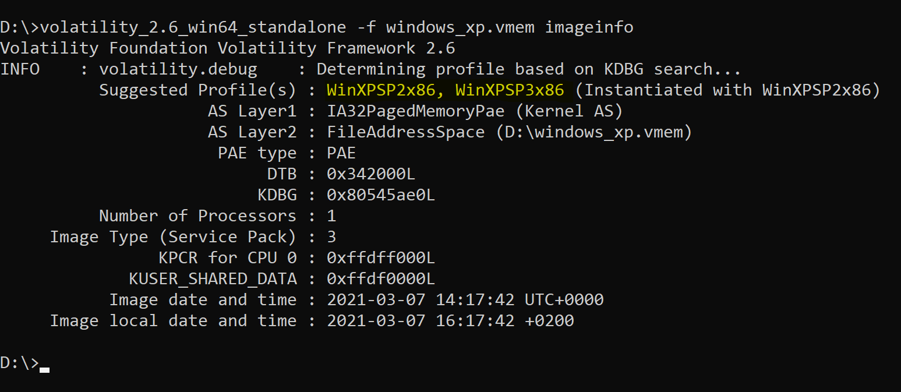

Analyzing Memory Dumps using Volatility
This guide will demonstrate how to extract useful information and analyze a memory dump using volatility
Volatility supports a lot of formats, here are some:
- Raw/Padded Physical Memory
- Firewire (IEEE 1394)
- Expert Witness (EWF)
- 32- and 64-bit Windows Crash Dump
- 32- and 64-bit Windows Hibernation (from Windows 7 or earlier)
- 32- and 64-bit Mach-O files
- Virtualbox Core Dumps
- VMware Saved State (.vmss) and Snapshot (.vmsn)
- HPAK Format (FastDump)
- QEMU memory dumps
- LiME format
It also supports a lot of operating system formats!
-
Click me to display operating system support
Volatility supports investigations of the following memory images:[4]
Windows:
- 32-bit Windows XP (Service Pack 2 and 3)
- 32-bit Windows 2003 Server (Service Pack 0, 1, 2)
- 32-bit Windows Vista (Service Pack 0, 1, 2)
- 32-bit Windows 2008 Server (Service Pack 1, 2)
- 32-bit Windows 7 (Service Pack 0, 1)
- 32-bit Windows 8, 8.1, and 8.1 Update 1
- 32-bit Windows 10 (initial support)
- 64-bit Windows XP (Service Pack 1 and 2)
- 64-bit Windows 2003 Server (Service Pack 1 and 2)
- 64-bit Windows Vista (Service Pack 0, 1, 2)
- 64-bit Windows 2008 Server (Service Pack 1 and 2)
- 64-bit Windows 2008 R2 Server (Service Pack 0 and 1)
- 64-bit Windows 7 (Service Pack 0 and 1)
- 64-bit Windows 8, 8.1, and 8.1 Update 1
- 64-bit Windows Server 2012 and 2012 R2
- 64-bit Windows 10 (including at least 10.0.14393)
- 64-bit Windows Server 2016 (including at least 10.0.14393.0)
Mac OSX:
- 32-bit 10.5.x Leopard (the only 64-bit 10.5 is Server, which isn't supported)
- 32-bit 10.6.x Snow Leopard
- 32-bit 10.7.x Lion
- 64-bit 10.6.x Snow Leopard
- 64-bit 10.7.x Lion
- 64-bit 10.8.x Mountain Lion
- 64-bit 10.9.x Mavericks
- 64-bit 10.10.x Yosemite
- 64-bit 10.11.x El Capitan
- 64-bit 10.12.x Sierra
- 64-bit 10.13.x High Sierra
- 64-bit 10.14.x Mojave
- 64-bit 10.15.x Catalina
Linux:
- 32-bit Linux kernels 2.6.11 to 5.5
- 64-bit Linux kernels 2.6.11 to 5.5
- OpenSuSE, Ubuntu, Debian, CentOS, Fedora, Mandriva, etc.
Source: Wikipedia
The syntax of volatility is pretty simple:
$ volatility -f [path to memory dump] [module to use] [...optional commands, module specific]
To analyze an image with volatility, we have first to figure out the profile to use for it, we can determinate profile using a KDBG search.
1. Determining profile
Determining the profile using volatility is pretty easy:
$ volatility -f [path to memory dump] imageinfo
The output should be something similar to this:

Important: We can see from these results that volatility is suggesting us to use WinXPSP2x86 or WinXPSP3x86 profile. I know this is a Windows XP SP 3 machine, so I am going to use WinXPSP3x86.
Now that we identified the profile, we can run several modules on this image. You can get a list of available modules using the -h option, there are a lot of them

- And that's not only everything.
Let's run some modules.
2. Dumping the SAM database using Volatility
The module name is named hashdump and you can run it like this: volatility_2.6_win64_standalone -f windows_xp.vmem hashdump --profile=WinXPSP3x86. This will return the NTLM hashes (NT:LM) of the users on the machine.
3. Scanning the memory for history of commands ran
You can scan commands ran on the machine using volatility, the module name is named cmdscan and you can use it like this volatility_2.6_win64_standalone -f windows_xp.vmem cmdscan --profile=WinXPSP3x86
You will get an output like this:

4. Getting a list of processes
You can get a list of processes that were running on the machine using the pslist or psscan modules. psscan is more detailed, I will be using pslist in this example, you can use it like this: volatility_2.6_win64_standalone -f windows_xp.vmem psscan --profile=WinXPSP3x86
You will get an output like this:

5. Other interesting modules
There are a ton of interesting modules in Volatility, here are others you can use:
clipboard- dump the clipboarddlldump / dlllist- dump, respectively list loaded dllsevtlogs- extract event log (win xp / 2003 only)dumpfiles- dump cached filesmemdump- Dump the addressable memory for a process- There are many other cool modules in volatility